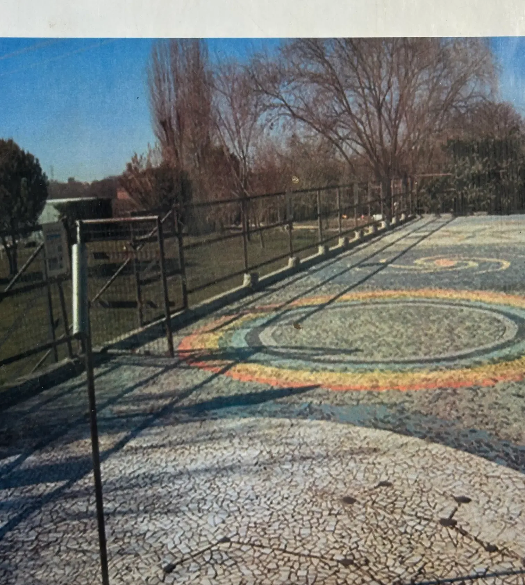
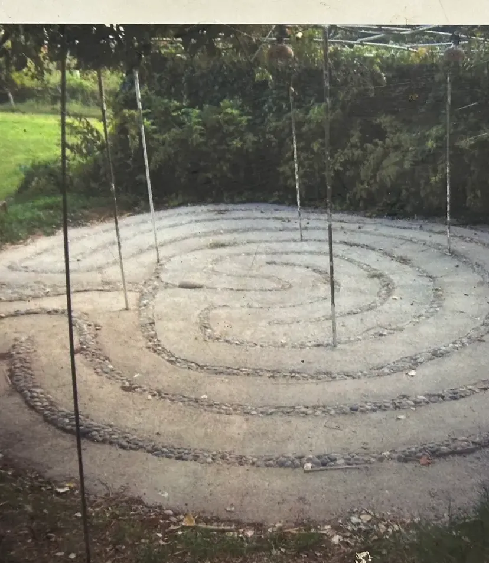

Bibliografie
In El Xop gibt es handgemachte Bücher, die seine Winkel erklären: den Himmel vom Aussichtspunkt, die Symbole im Labyrinth, die Geschichte der Labyrinthe und den Jakobsweg. Hier können Sie sie vollständig lesen.
 Fotoalbum
Die Orte von El Xop
Ein handgezeichneter Plan des ganzen Anwesens und ein fotografischer Rundgang durch seine Winkel bis zur großen Schwarzpappel, die ihm seinen Namen gibt.
Fotoalbum
Die Orte von El Xop
Ein handgezeichneter Plan des ganzen Anwesens und ein fotografischer Rundgang durch seine Winkel bis zur großen Schwarzpappel, die ihm seinen Namen gibt.

Astronomie unter den Füßen Der Himmelsaussichtspunkt Ein Mosaikboden, um den Himmel zu lesen: Sternbilder, Sonnenaufgang zu den Sonnenwenden, der Regenbogen, die Milchstraße, die Winde und die Mondphasen. Das Labyrinth des Lebens und seine Symbole
Die Platanenallee
Ein Spaziergang im Schatten der Platanen, der „das Labyrinth des Lebens“ verbirgt: ein Weg voller Kreuzungen mit uralten Symbolen und Reflexzonenkreisen zum Barfußgehen.
Das Labyrinth des Lebens und seine Symbole
Die Platanenallee
Ein Spaziergang im Schatten der Platanen, der „das Labyrinth des Lebens“ verbirgt: ein Weg voller Kreuzungen mit uralten Symbolen und Reflexzonenkreisen zum Barfußgehen.

Das Labyrinth mit sieben Umgängen Mutter Erde Was ein Labyrinth ist, wie man eines mit sieben Umgängen zeichnet, wozu sie dienten und wo man sie auf der Welt findet: von Galicien bis Nazca, von Kreta bis Arizona. Von Grenyana nach Butsènit und das Gänsespiel
Der Jakobsweg
El Xop liegt direkt am Jakobsweg. Ein Weg zwischen zwei Einsiedeleien, die Legende der Laternen von Lleida, das Brettspiel der Horta und das Geheimnis des Gänsespiels.
Von Grenyana nach Butsènit und das Gänsespiel
Der Jakobsweg
El Xop liegt direkt am Jakobsweg. Ein Weg zwischen zwei Einsiedeleien, die Legende der Laternen von Lleida, das Brettspiel der Horta und das Geheimnis des Gänsespiels.